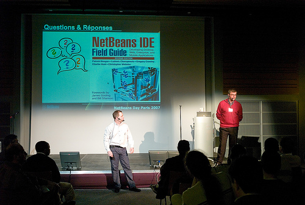
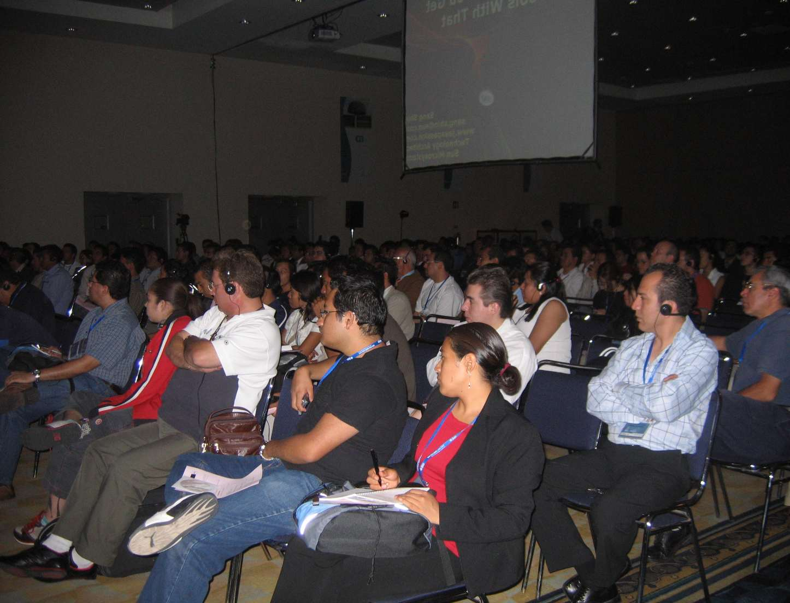

The NetBeans worldTour Wraps up 2006-2007 Season
August 2007
With multiple stops around the globe, the NetBeans
worldTour is a road trip that fans of the NetBeans IDE have come to
expect and enjoy as an opportunity to learn more about their favorite
development tool.
Organized around the Sun Tech Days,
the worldTour's NetBeans
Software Day is a free event where developers can attend
technical sessions led by NetBeans evangelists and engineers. Attendees
learn about improvements to NetBeans and pick up new tips and tricks
for working within IDE. For the uninitiated, the sessions offer a
first-hand look at the ways the IDE can improve their development
projects. The day also serves as a gathering point for the community,
with users interacting with each other and the NetBeans team, and
mingling with Java and Sun luminaries such as James Gosling and
Jonathan Schwartz. Chances to win cool NetBeans giveaways serve as an
added draw.
In the 2006-2007 season, the worldTour delivered the NetBeans agenda to 17 cities
worldwide. The message? That NetBeans had muscled up thanks to a
functionality overhaul.
Developers in Seattle, where the season kicked off in September,
received previews of NetBeans 5.5 and new features in the IDE such as
Java EE 5 support, the NetBeans GUI Builder, and five add-on
tools—Mobility, Enterprise, Profiler, C/C++, and Visual Web packs. The
new features were demoed by NetBeans experts who touched on the
advantages of each and showed users how to integrate the tools into
their work.
NetBeans' new features and improved functionality garnered praise from
veteran users and acquired converts as the tour traveled to Shanghai,
Beijing, Buenos Aires, Seoul, Prague (the birthplace of NetBeans!),
Atlanta, Hyderabad, Kuala Lampur, London, Paris, St. Petersburg, Sao
Paolo, San Francisco, Mexico City, Washington D.C., and Zurich.
A testament to the tour's popularity among
users, seating at NetBeans
Day events was often hard to come by--many stops witnessed record
attendance. In Hyderabad,
the technical sessions were standing room-only; in Buenos Aires,
attendees looking to register at the last minute found that sessions
were fully booked. At almost all stops, during breaks in the day,
NetBeans presenters often fielded questions from more users than time
permitted.
After a brief summer break, the worldTour returns for another thrilling
season this September with 14 scheduled stops, and more to be announced
later in the season. The goal for this tour is two-fold: as expected,
bringing committed NetBeans fans news about the latest features in the
IDE, and reaching out to developers who use other IDEs and showing them
how NetBeans can complement their productivity. And as always, the day
is also a chance to rub shoulders with popular NetBeans bloggers and
Java personalities and with other NetBeans enthusiasts.
So, check out the NetBeans calendar for a NetBeans Software Day near
you, mark your calendar and register!
The first stop on the 2007–2008 tour? BOSTON!
NetBeans
worldTour 2007 – 2008 Agenda
From the 2006–2007 Season
Blogs & Press
Buenos Aires: Press,
Roman
Strobl's blog
Prague
Hyderabad: Press,
Blogs
Paris: Henry
Story's blog
Mexico: David
Botteril's blog
San
Francisco: Geertjan
Wielenga's blog, Gregg
Sporar's blog
Zurich: Gregg
Sporar's blog, Roman
Strobl's blog